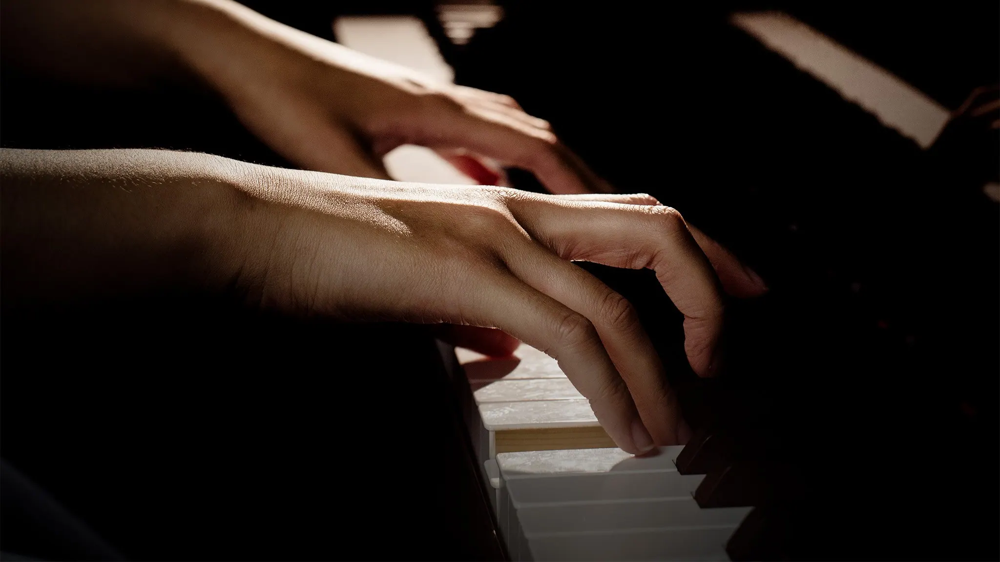

4ª edizione · Concorso nazionale
Premio
Corrado
Rollero
Concorso musicale nazionale riservato ai giovani nati negli anni 2008 e successivi.
Iscrizioni–Edizione 2027
Villa SottanisBiblioteca e Auditorium
Casarza Ligure (GE)
Casarza Ligure (GE)
Categorie
Il concorso è suddiviso in quattro categorie. Le categorie soliste hanno quattro sezioni in base all’età del candidato.


Rassegna concertistica 2026
Concerti prima e dopo il concorso.
Vincitori dell’edizione 2026
Risultati e premi della 3ª edizione.